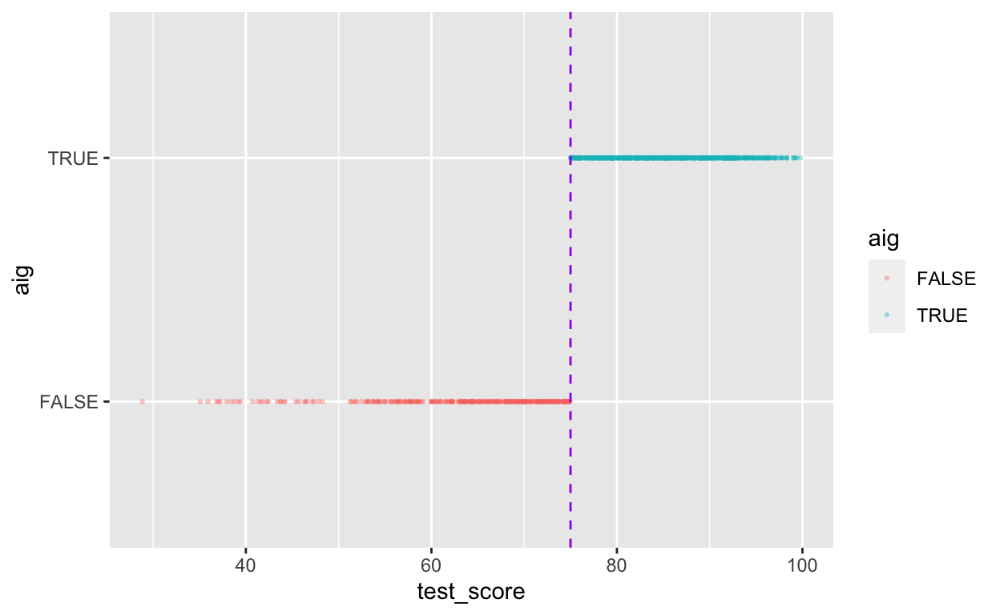
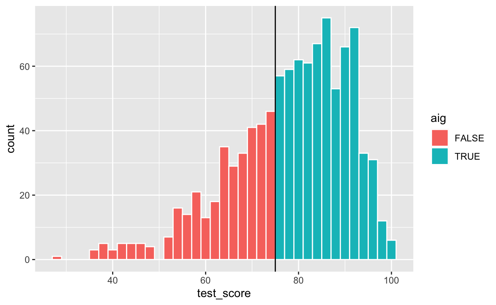
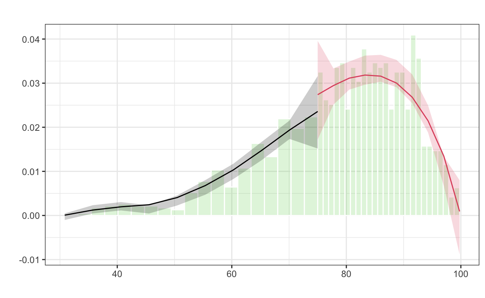
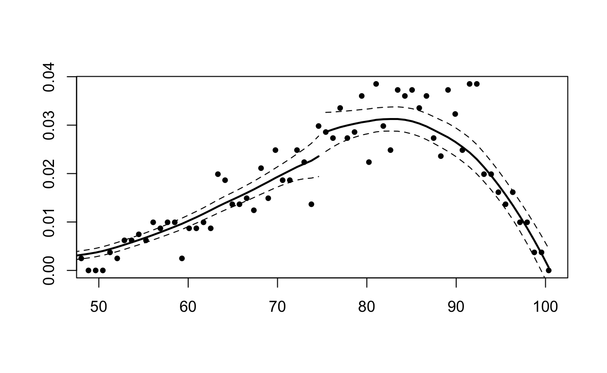
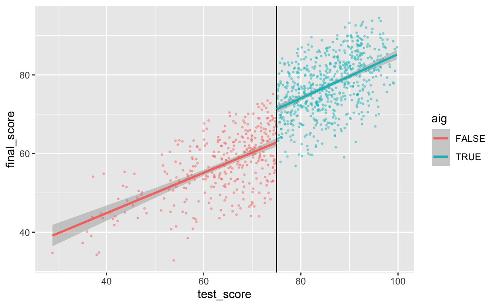
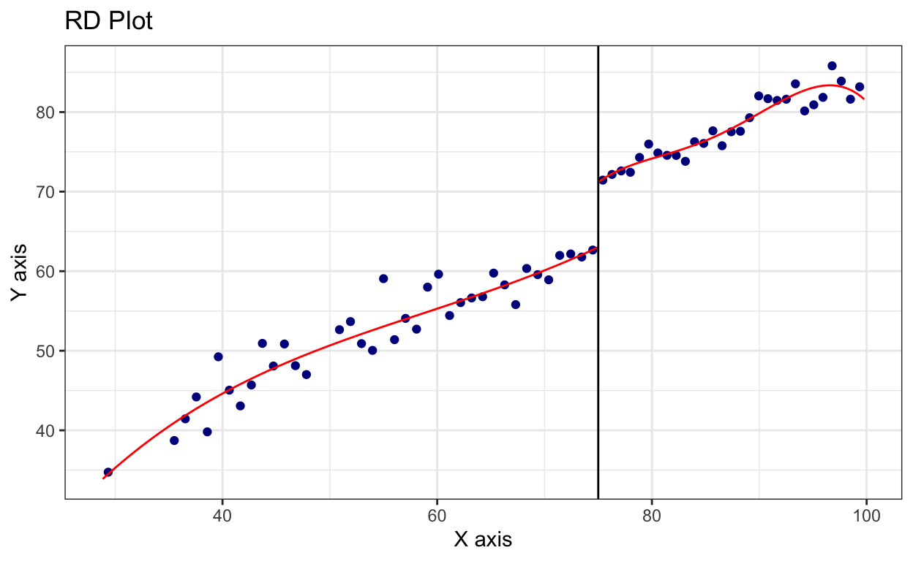

Chapter 11 RDD (2)
Source: Dr. Andrew Heiss’s course materials on RDD: https://evalsp20.classes.andrewheiss.com/class/11-class/
In this hypothetical example, students take a test in 6th grade to determine if they can participate in an academically and intellectually gifted (AIG) program during middle school and high school. In the AIG program students regularly get pulled out of their classes for extra work and lessons. At the end of high school, students take a final test (with a maximum of 100 points) to measure how much they learned overall.
library(tidyverse) # For ggplot, %>%, and gang
library(broom) # For converting models into tables
library(rdrobust) # For robust nonparametric regression discontinuity
library(rddensity) # For nonparametric regression discontinuity density tests
library(huxtable) # For side-by-side regression tables
library(rdd)
# Load data
aig_program <- read_csv("aig_program.csv")11.1 Step 1: Determine if process of assigning treatment is rule-based
There’s no statsy test for this. You just have to figure it out based on in the implementation of the program.
It sounds like it’s rule-based!
head(aig_program)## # A tibble: 6 × 6
## ID test_score final_score Race Sex aig
## <chr> <dbl> <dbl> <chr> <chr> <lgl>
## 1 0001 92.4 88.1 White Male TRUE
## 2 0002 72.8 58.2 Hispanic Male FALSE
## 3 0003 53.7 52.0 White Female FALSE
## 4 0004 98.3 77.5 White Male TRUE
## 5 0005 69.7 44.1 White Male FALSE
## 6 0006 68.1 50.1 Hispanic Male FALSE11.2 Step 2: Determine if the design is fuzzy or sharp
Since we know that the program was applied based on a rule, we want to next figure out how strictly the rule was applied. The threshold was 75 points on the test—did people who scored 73 slip into the AIG program, or did people who scored 80 not show up to the program? The easiest way to do this is with a graph, and we can get exact numbers with a table.
ggplot(data = aig_program,
mapping = aes(x = test_score, y = aig, color = aig)) +
geom_point(size = 0.5, alpha = 0.3) +
geom_vline(xintercept = 75, color = "purple", linetype = "dashed")
aig_program %>%
group_by(aig, test_score >= 75) %>%
summarize(count = n())## `summarise()` has grouped output by 'aig'. You can override using the `.groups` argument.## # A tibble: 2 × 3
## # Groups: aig [2]
## aig `test_score >= 75` count
## <lgl> <lgl> <int>
## 1 FALSE FALSE 346
## 2 TRUE TRUE 65411.3 Step 3: Check for discontinuity in running variable around cutpoint
Next we need to see if there was any manipulation in the rating or running variable—maybe lots of people bunched up around 75 because of how the test was graded (i.e. teachers wanted to get students into the program so they bumped people up from 70 to 76). We can do this a couple different ways. First, make a histogram of the running variable (test scores) and see if there are any big jumps around the threshold:
ggplot(data = aig_program, mapping = aes(x = test_score, fill = aig)) +
geom_histogram(binwidth = 2, color = "white") +
geom_vline(xintercept = 75)
If there’s a jump, we want to check if it’s statistically significant. To test that, we can do a McCrary density test (explained on pp. 185-86 of Causal Inference: The Mixtape). This puts data into bins like a histogram, and then plots the averages and confidence intervals of those bins. If the confidence intervals of the density lines don’t overlap, then there’s likely something systematically wrong with how the test was scored (i.e. too many people getting 76 vs 74). If the confidence intervals overlap, there’s not any significant difference around the threshold and we’re fine.
thing <- rdplotdensity(rdd = rddensity(X = aig_program$test_score, c = 75),
X = aig_program$test_score)## Warning: The dot-dot notation (`..density..`) was deprecated in ggplot2 3.4.0.
## ℹ Please use `after_stat(density)` instead.
## ℹ The deprecated feature was likely used in the lpdensity package.
## Please report the issue to the authors.
DCdensity(aig_program$test_score, 75, ext.out = F)
## [1] 0.315409911.4 Step 4: Check for discontinuity in outcome across running variable
Now that we know this is a sharp design and that there’s no bunching of test scores around the 75-point threshold, we can finally see if there’s a discontinuity in final scores based on participation in the AIG program. Plot the running variable on the x-axis, the outcome variable on the y-axis, and color the points by whether they participated in the program.
ggplot(data = aig_program,
mapping = aes(x = test_score, y = final_score, color = aig)) +
geom_point(size = 0.5, alpha = 0.4) +
geom_vline(xintercept = 75) +
geom_smooth(method = "lm")## `geom_smooth()` using formula = 'y ~ x'
11.5 Step 5: Measure the size of the effect
There’s a discontinuity, but how big is it? And is it statistically significant?
We can check the size two different ways: parametrically (i.e. using lm() with specific parameters and coefficients), and nonparametrically (i.e. not using lm() or any kind of straight line and instead drawing lines that fit the data more precisely). We’ll do it both ways.
11.5.1 Parametric estimation
First we’ll do it parametrically by using linear regression. Here we want to explain the variation in final scores based on the AIG test score and participation in the program:
\[ \text{Final score} = \beta_0 + \beta_1 \text{AIG test score} + \beta_2 \text{AIG program} + \epsilon \]
To make it easier to interpret coefficients, we can center the test score column so that instead of showing the actual test score, it shows how many points above or below 75 the student scored.
aig_program_centered <- aig_program %>%
mutate(test_centered = test_score - 75)
model_1 <- lm(final_score ~ test_centered + aig, data = aig_program_centered)
tidy(model_1)## # A tibble: 3 × 5
## term estimate std.error statistic p.value
## <chr> <dbl> <dbl> <dbl> <dbl>
## 1 (Intercept) 63.1 0.466 135. 0
## 2 test_centered 0.535 0.0278 19.2 2.09e-70
## 3 aigTRUE 8.47 0.743 11.4 2.27e-28model_1_int <- lm(final_score ~ test_centered*aig, data = aig_program_centered)
tidy(model_1_int)## # A tibble: 4 × 5
## term estimate std.error statistic p.value
## <chr> <dbl> <dbl> <dbl> <dbl>
## 1 (Intercept) 62.8 0.544 115. 0
## 2 test_centered 0.513 0.0376 13.6 6.25e-39
## 3 aigTRUE 8.43 0.745 11.3 4.63e-28
## 4 test_centered:aigTRUE 0.0471 0.0558 0.844 3.99e- 1Here’s what these coefficients mean:
- \(\beta_0\): This is the intercept. …
- \(\beta_1\): This is the coefficient for
test_score_centered. … - \(\beta_2\): This is the coefficient for AIG, and this is the one we care about the most. This is the shift in intercept when
aigis true, or the difference between scores at the threshold. …
One advantage to using a parametric approach is that you can include other covariates like demographics. You can also use polynomial regression and include terms like test_score² or test_score³ or even test_score⁴ to make the line fit the data as close as possible.
Here we fit the model to the entire data, but in real life, we care most about the observations right around the threshold. Scores that are super high or super low shouldn’t really influence our effect size, since we only care about the people who score just barely under and just barely over 75.
We can fit the same model but restrict it to people within a smaller window, or bandwidth, like ±10 points, or ±5 points:
aig_program_10 <- aig_program_centered %>%
filter(test_centered > -10 & test_centered < 10)
aig_program_5 <- aig_program_centered %>%
filter(test_centered > -5 & test_centered < 5)
model_2 <- lm(final_score ~ test_centered + aig, data = aig_program_10)
tidy(model_2)## # A tibble: 3 × 5
## term estimate std.error statistic p.value
## <chr> <dbl> <dbl> <dbl> <dbl>
## 1 (Intercept) 62.5 0.669 93.5 2.90e-316
## 2 test_centered 0.458 0.103 4.43 1.17e- 5
## 3 aigTRUE 9.20 1.17 7.89 1.97e- 14model_3 <- lm(final_score ~ test_centered + aig, data = aig_program_5)
tidy(model_3)## # A tibble: 3 × 5
## term estimate std.error statistic p.value
## <chr> <dbl> <dbl> <dbl> <dbl>
## 1 (Intercept) 63.6 0.908 70.1 3.69e-168
## 2 test_centered 0.859 0.274 3.14 1.91e- 3
## 3 aigTRUE 7.36 1.58 4.66 5.22e- 6We can compare all these models simultaneously with huxreg:
huxreg(list(model_1, model_1_int, model_2, model_3))| (1) | (2) | (3) | (4) | |
|---|---|---|---|---|
| (Intercept) | 63.075 *** | 62.838 *** | 62.513 *** | 63.614 *** |
| (0.466) | (0.544) | (0.669) | (0.908) | |
| test_centered | 0.535 *** | 0.513 *** | 0.458 *** | 0.859 ** |
| (0.028) | (0.038) | (0.103) | (0.274) | |
| aigTRUE | 8.470 *** | 8.434 *** | 9.196 *** | 7.361 *** |
| (0.743) | (0.745) | (1.166) | (1.581) | |
| test_centered:aigTRUE | 0.047 | |||
| (0.056) | ||||
| N | 1000 | 1000 | 497 | 257 |
| R2 | 0.716 | 0.717 | 0.513 | 0.456 |
| logLik | -3292.006 | -3291.648 | -1640.572 | -842.102 |
| AIC | 6592.012 | 6593.297 | 3289.145 | 1692.204 |
| *** p < 0.001; ** p < 0.01; * p < 0.05. | ||||
11.5.2 Nonparametric estimation
Instead of using linear regression to measure the size of the discontinuity, we can use nonparametric methods. Essentially this means that R will not try to fit a straight line to the data—instead it’ll curve around the points and try to fit everything as smoothly as possible.
The rdrobust() function makes it really easy to measure the gap at the cutoff with nonparametric estimation. Here’s the simplest version:
rdrobust(y = aig_program$final_score,
x = aig_program$test_score,
c = 75) %>%
summary()## Sharp RD estimates using local polynomial regression.
##
## Number of Obs. 1000
## BW type mserd
## Kernel Triangular
## VCE method NN
##
## Number of Obs. 346 654
## Eff. Number of Obs. 138 198
## Order est. (p) 1 1
## Order bias (q) 2 2
## BW est. (h) 6.584 6.584
## BW bias (b) 9.576 9.576
## rho (h/b) 0.688 0.688
## Unique Obs. 346 654
##
## =============================================================================
## Method Coef. Std. Err. z P>|z| [ 95% C.I. ]
## =============================================================================
## Conventional 8.011 1.494 5.360 0.000 [5.082 , 10.940]
## Robust - - 4.437 0.000 [4.315 , 11.144]
## =============================================================================There are a few important pieces of information to look at in this output:
- The thing you care about the most is the actual effect size. This is the coefficient in the table at the bottom, indicated with the “Conventional” method. Here it’s 8.011, which means the AIG program causes an 8-point increase in final test scores. The table at the bottom also includes standard errors, p-values, and confidence intervals for the coefficient, both normal estimates (conventional) and robust estimates (robust). According to both types of estimates, this 8 point bump is statistically significant (p < 0.001; the 95% confidence interval definitely doesn’t ever include 0).
- The model used a bandwidth of 6.584 (
BW est. (h)in the output), which means it only looked at people with test scores of 75 ± 6.6. It decided on this bandwidth automatically, but you can change it to whatever you want. - The model used a triangular kernel. This is the most esoteric part of the model—the kernel decides how much weight to give to observations around the cutoff. Test scores like 74.99 or 75.01 are extremely close to 75, so they get the most weight. Scores like 73 or 77 are a little further away so they matter less. Scores like 69 or 81 matter even less, so they get even less weight. You can use different kernels too, and Wikipedia has a nice graphic showing the shapes of these different kernels and how they give different weights to observations at different distances.
We can plot this nonparametric model with rdplot(). It unfortunately doesn’t use the same plotting system as ggplot(), so you can’t add layers like labs() or geom_point() or anything else, which is sad. Oh well.
rdplot(y = aig_program$final_score,
x = aig_program$test_score,
c = 75)
Look at that 8 point jump at 75! Neat!
By default, rdrobust() chooses the bandwidth size automatically based on fancy algorithms that economists have developed. You can use rdbwselect() to see what that bandwidth is, and if you include the all = TRUE argument, you can see a bunch of different potential bandwidths based on a bunch of different algorithms:
rdbwselect(y = aig_program$final_score,
x = aig_program$test_score,
c = 75) %>%
summary()## Call: rdbwselect
##
## Number of Obs. 1000
## BW type mserd
## Kernel Triangular
## VCE method NN
##
## Number of Obs. 346 654
## Order est. (p) 1 1
## Order bias (q) 2 2
## Unique Obs. 346 654
##
## =======================================================
## BW est. (h) BW bias (b)
## Left of c Right of c Left of c Right of c
## =======================================================
## mserd 6.584 6.584 9.576 9.576
## =======================================================What are the different possible bandwidths we could use?
rdbwselect(y = aig_program$final_score,
x = aig_program$test_score,
c = 75,
all = TRUE) %>%
summary()## Call: rdbwselect
##
## Number of Obs. 1000
## BW type All
## Kernel Triangular
## VCE method NN
##
## Number of Obs. 346 654
## Order est. (p) 1 1
## Order bias (q) 2 2
## Unique Obs. 346 654
##
## =======================================================
## BW est. (h) BW bias (b)
## Left of c Right of c Left of c Right of c
## =======================================================
## mserd 6.584 6.584 9.576 9.576
## msetwo 12.996 5.671 20.658 8.491
## msesum 6.039 6.039 8.939 8.939
## msecomb1 6.039 6.039 8.939 8.939
## msecomb2 6.584 6.039 9.576 8.939
## cerrd 4.661 4.661 9.576 9.576
## certwo 9.200 4.015 20.658 8.491
## cersum 4.275 4.275 8.939 8.939
## cercomb1 4.275 4.275 8.939 8.939
## cercomb2 4.661 4.275 9.576 8.939
## =======================================================Phew. There are a lot here. The best one was mserd, or ±6.5. Some say ±6, others ±4.5ish, other are asymmetric and say -14 before and +5 after, or -9 before and +4 after. Try a bunch of different bandwidths as part of your sensitivity analysis and see if your effect size changes substantially as a result.
Another common approach to sensitivity analysis is to use the ideal bandwidth, twice the ideal, and half the ideal (so in our case 6.5, 13, and 3.25) and see if the estimate changes substantially. Use the h argument to specify your own bandwidth
rdrobust(y = aig_program$final_score,
x = aig_program$test_score,
c = 75, h = 6.5) %>%
summary()## Sharp RD estimates using local polynomial regression.
##
## Number of Obs. 1000
## BW type Manual
## Kernel Triangular
## VCE method NN
##
## Number of Obs. 346 654
## Eff. Number of Obs. 136 197
## Order est. (p) 1 1
## Order bias (q) 2 2
## BW est. (h) 6.500 6.500
## BW bias (b) 6.500 6.500
## rho (h/b) 1.000 1.000
## Unique Obs. 346 654
##
## =============================================================================
## Method Coef. Std. Err. z P>|z| [ 95% C.I. ]
## =============================================================================
## Conventional 7.986 1.501 5.321 0.000 [5.044 , 10.928]
## Robust - - 4.492 0.000 [4.734 , 12.063]
## =============================================================================rdrobust(y = aig_program$final_score,
x = aig_program$test_score,
c = 75, h = 6.5/2) %>%
summary()## Sharp RD estimates using local polynomial regression.
##
## Number of Obs. 1000
## BW type Manual
## Kernel Triangular
## VCE method NN
##
## Number of Obs. 346 654
## Eff. Number of Obs. 74 95
## Order est. (p) 1 1
## Order bias (q) 2 2
## BW est. (h) 3.250 3.250
## BW bias (b) 3.250 3.250
## rho (h/b) 1.000 1.000
## Unique Obs. 346 654
##
## =============================================================================
## Method Coef. Std. Err. z P>|z| [ 95% C.I. ]
## =============================================================================
## Conventional 8.169 1.774 4.606 0.000 [4.693 , 11.645]
## Robust - - 3.433 0.001 [3.311 , 12.123]
## =============================================================================rdrobust(y = aig_program$final_score,
x = aig_program$test_score,
c = 75, h = 6.5 * 2) %>%
summary()## Sharp RD estimates using local polynomial regression.
##
## Number of Obs. 1000
## BW type Manual
## Kernel Triangular
## VCE method NN
##
## Number of Obs. 346 654
## Eff. Number of Obs. 237 409
## Order est. (p) 1 1
## Order bias (q) 2 2
## BW est. (h) 13.000 13.000
## BW bias (b) 13.000 13.000
## rho (h/b) 1.000 1.000
## Unique Obs. 346 654
##
## =============================================================================
## Method Coef. Std. Err. z P>|z| [ 95% C.I. ]
## =============================================================================
## Conventional 8.774 1.131 7.759 0.000 [6.558 , 10.991]
## Robust - - 5.182 0.000 [5.047 , 11.186]
## =============================================================================Here the coefficients change slightly:
| Bandwidth | Effect size |
|---|---|
| 6.5 (ideal) | 7.986 |
| 13 (twice) | 8.774 |
| 3.25 (half) | 8.169 |
You can also adjust the kernel. By default rd_robust uses a triangular kernel (more distant observations have less weight linearly), but you can switch it to Epanechnikov (more distant observations have less weight following a curve) or uniform (more distant observations have the same weight as closer observations; this is unweighted).
rdrobust(y = aig_program$final_score,
x = aig_program$test_score,
c = 75) %>%
summary()## Sharp RD estimates using local polynomial regression.
##
## Number of Obs. 1000
## BW type mserd
## Kernel Triangular
## VCE method NN
##
## Number of Obs. 346 654
## Eff. Number of Obs. 138 198
## Order est. (p) 1 1
## Order bias (q) 2 2
## BW est. (h) 6.584 6.584
## BW bias (b) 9.576 9.576
## rho (h/b) 0.688 0.688
## Unique Obs. 346 654
##
## =============================================================================
## Method Coef. Std. Err. z P>|z| [ 95% C.I. ]
## =============================================================================
## Conventional 8.011 1.494 5.360 0.000 [5.082 , 10.940]
## Robust - - 4.437 0.000 [4.315 , 11.144]
## =============================================================================rdrobust(y = aig_program$final_score,
x = aig_program$test_score,
c = 75, kernel = "epanechnikov") %>%
summary()## Sharp RD estimates using local polynomial regression.
##
## Number of Obs. 1000
## BW type mserd
## Kernel Epanechnikov
## VCE method NN
##
## Number of Obs. 346 654
## Eff. Number of Obs. 129 178
## Order est. (p) 1 1
## Order bias (q) 2 2
## BW est. (h) 5.994 5.994
## BW bias (b) 9.277 9.277
## rho (h/b) 0.646 0.646
## Unique Obs. 346 654
##
## =============================================================================
## Method Coef. Std. Err. z P>|z| [ 95% C.I. ]
## =============================================================================
## Conventional 7.866 1.547 5.084 0.000 [4.834 , 10.898]
## Robust - - 4.184 0.000 [4.012 , 11.082]
## =============================================================================rdrobust(y = aig_program$final_score,
x = aig_program$test_score,
c = 75, kernel = "uniform") %>%
summary()## Sharp RD estimates using local polynomial regression.
##
## Number of Obs. 1000
## BW type mserd
## Kernel Uniform
## VCE method NN
##
## Number of Obs. 346 654
## Eff. Number of Obs. 121 163
## Order est. (p) 1 1
## Order bias (q) 2 2
## BW est. (h) 5.598 5.598
## BW bias (b) 10.148 10.148
## rho (h/b) 0.552 0.552
## Unique Obs. 346 654
##
## =============================================================================
## Method Coef. Std. Err. z P>|z| [ 95% C.I. ]
## =============================================================================
## Conventional 7.733 1.554 4.975 0.000 [4.686 , 10.779]
## Robust - - 4.081 0.000 [3.776 , 10.753]
## =============================================================================Again, the coefficients change slightly:
| Kernel | Effect size |
|---|---|
| Triangular | 8.011 |
| Epanechnikov | 7.866 |
| Uniform | 7.733 |
11.6 Step 6: Compare all the effects
We just estimated a ton of effect sizes. In real life you’d generally just report one of these as your final effect, but you’d run the different parametric and nonparametric models to check how reliable and robust your findings are. Here’s everything we just found:
| Method | Bandwidth | Kernel | Estimate |
|---|---|---|---|
| Parametric | Full data | Unweighted | 8.470 |
| Parametric | 10 | Unweighted | 9.196 |
| Parametric | 5 | Unweighted | 7.361 |
| Nonparametric | 6.584 | Triangular | 8.011 |
| Nonparametric | 6.5 | Triangular | 7.986 |
| Nonparametric | 13 | Triangular | 8.774 |
| Nonparametric | 3.25 | Triangular | 8.169 |
| Nonparametric | 6.584 | Epanechnikov | 7.866 |
| Nonparametric | 6.584 | Uniform (unweighted) | 7.733 |
In real life, I’d likely report the simplest one (row 4: nonparametric, automatic bandwidth, triangular kernel), but knowing how much the effect varies across model specifications is helpful.